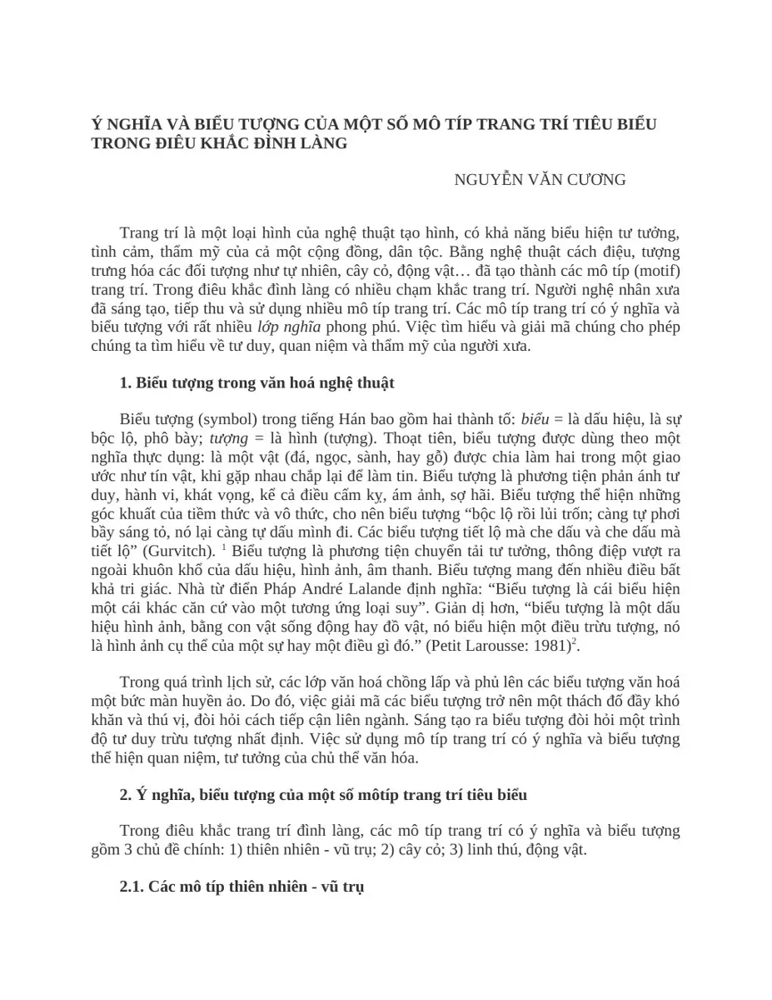
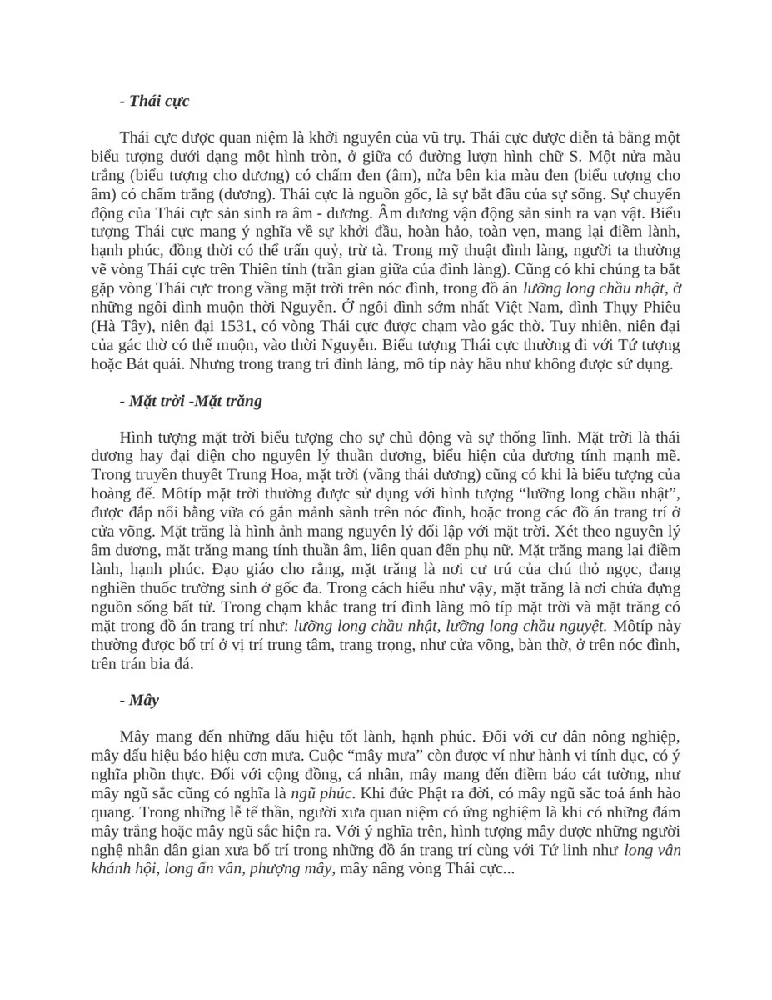
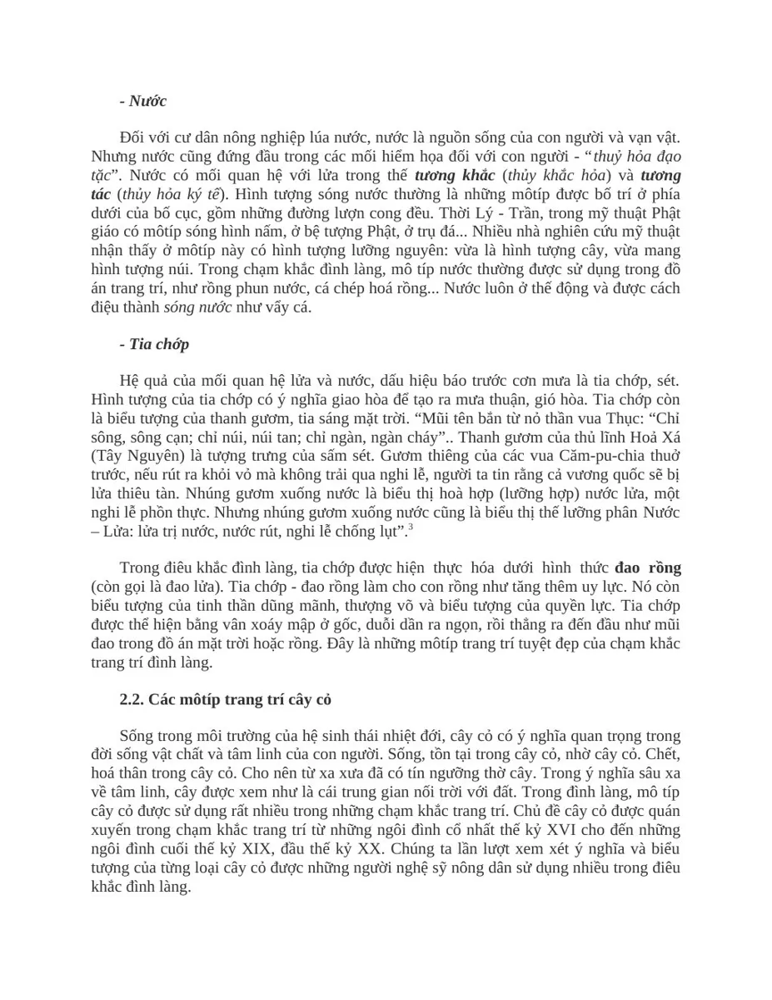
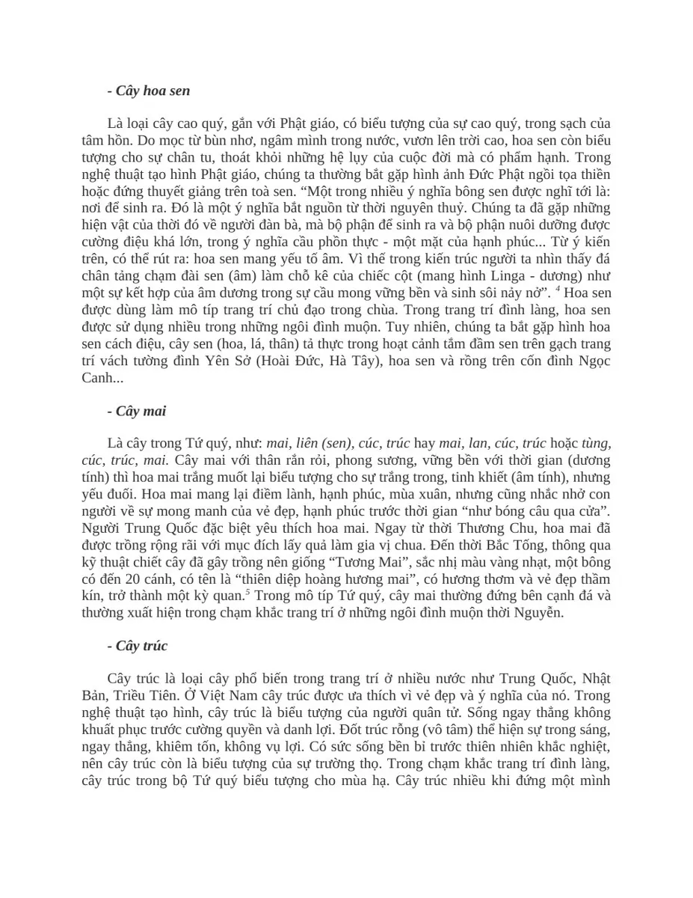
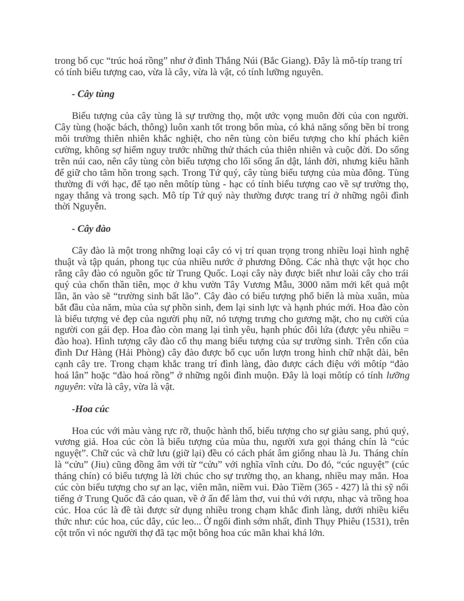
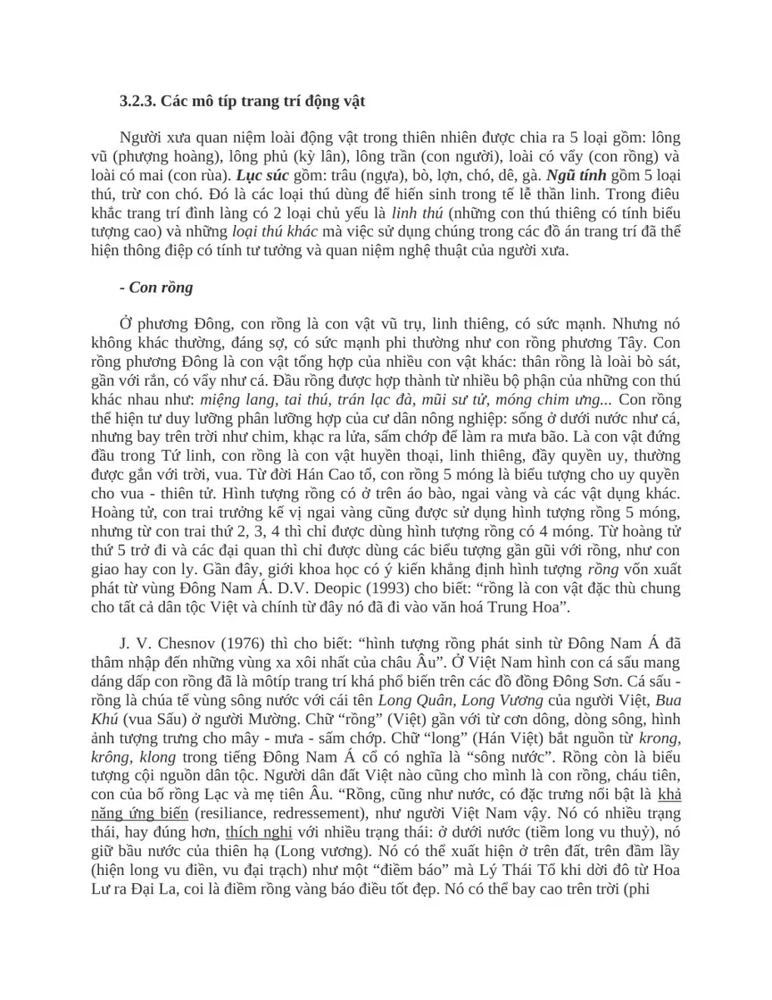
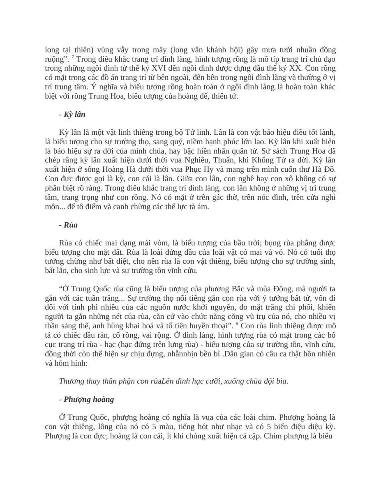
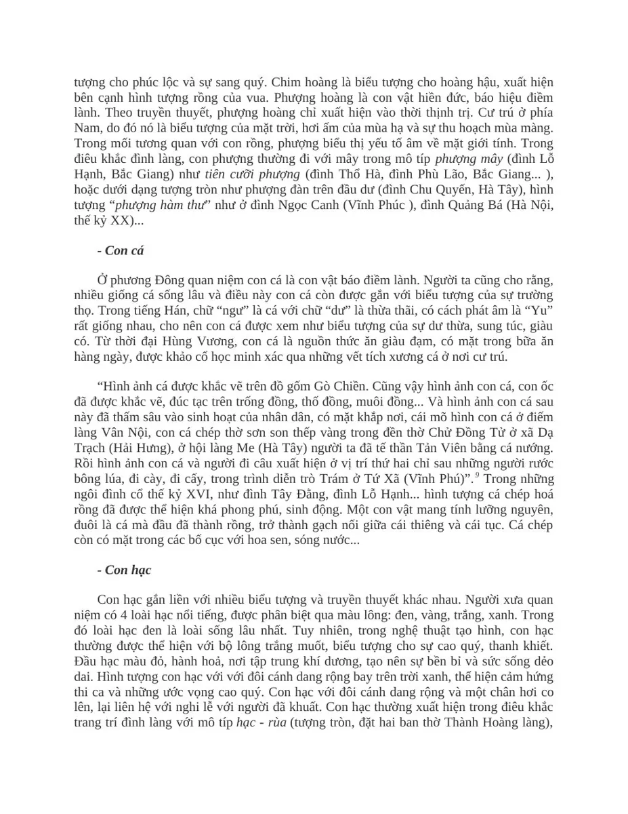
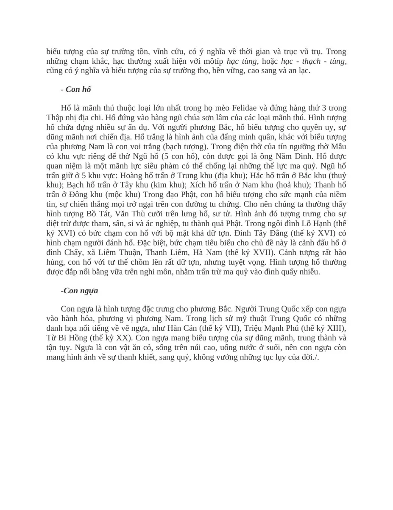

Ý NGHĨA VÀ BIỂU TƯỢNG CỦA MỘT SỐ MÔ TÍP TRANG TRÍ TIÊU BIỂU
TRONG ĐIÊU KHẮC ĐÌNH LÀNG
NGUYỄN VĂN CƯƠNG
Trang trí là một loại hình của nghệ thuật tạo hình, có khả năng biểu hiện tư tưởng,
tình cảm, thẩm mỹ của cả một cộng đồng, dân tộc. Bằng nghệ thuật cách điệu, tượng
trưng hóa các đối tượng như tự nhiên, cây cỏ, động vật… đã tạo thành các mô típ (motif)
trang trí. Trong điêu khắc đình làng có nhiều chạm khắc trang trí. Người nghệ nhân xưa
đã sáng tạo, tiếp thu và sử dụng nhiều mô típ trang trí. Các mô típ trang trí có ý nghĩa và
biểu tượng với rất nhiều lớp nghĩa phong phú. Việc tìm hiểu và giải mã chúng cho phép
chúng ta tìm hiểu về tư duy, quan niệm và thẩm mỹ của người xưa.
1. Biểu tượng trong văn hoá nghệ thuật
Biểu tượng (symbol) trong tiếng Hán bao gồm hai thành tố: biểu = là dấu hiệu, là sự
bộc lộ, phô bày; tượng = là hình (tượng). Thoạt tiên, biểu tượng được dùng theo một
nghĩa thực dụng: là một vật (đá, ngọc, sành, hay gỗ) được chia làm hai trong một giao
ước như tín vật, khi gặp nhau chắp lại để làm tin. Biểu tượng là phương tiện phản ánh tư
duy, hành vi, khát vọng, kể cả điều cấm kỵ, ám ảnh, sợ hãi. Biểu tượng thể hiện những
góc khuất của tiềm thức và vô thức, cho nên biểu tượng “bộc lộ rồi lủi trốn; càng tự phơi
bầy sáng tỏ, nó lại càng tự dấu mình đi. Các biểu tượng tiết lộ mà che dấu và che dấu mà
tiết lộ” (Gurvitch). 1 Biểu tượng là phương tiện chuyển tải tư tưởng, thông điệp vượt ra
ngoài khuôn khổ của dấu hiệu, hình ảnh, âm thanh. Biểu tượng mang đến nhiều điều bất
khả tri giác. Nhà từ điển Pháp André Lalande định nghĩa: “Biểu tượng là cái biểu hiện
một cái khác căn cứ vào một tương ứng loại suy”. Giản dị hơn, “biểu tượng là một dấu
hiệu hình ảnh, bằng con vật sống động hay đồ vật, nó biểu hiện một điều trừu tượng, nó
là hình ảnh cụ thể của một sự hay một điều gì đó.” (Petit Larousse: 1981)2.
Trong quá trình lịch sử, các lớp văn hoá chồng lấp và phủ lên các biểu tượng văn hoá
một bức màn huyền ảo. Do đó, việc giải mã các biểu tượng trở nên một thách đố đầy khó
khăn và thú vị, đòi hỏi cách tiếp cận liên ngành. Sáng tạo ra biểu tượng đòi hỏi một trình
độ tư duy trừu tượng nhất định. Việc sử dụng mô típ trang trí có ý nghĩa và biểu tượng
thể hiện quan niệm, tư tưởng của chủ thể văn hóa.
2. Ý nghĩa, biểu tượng của một số môtíp trang trí tiêu biểu
Trong điêu khắc trang trí đình làng, các mô típ trang trí có ý nghĩa và biểu tượng
gồm 3 chủ đề chính: 1) thiên nhiên - vũ trụ; 2) cây cỏ; 3) linh thú, động vật.
2.1. Các mô típ thiên nhiên - vũ trụ

- Thái cực
Thái cực được quan niệm là khởi nguyên của vũ trụ. Thái cực được diễn tả bằng một
biểu tượng dưới dạng một hình tròn, ở giữa có đường lượn hình chữ S. Một nửa màu
trắng (biểu tượng cho dương) có chấm đen (âm), nửa bên kia màu đen (biểu tượng cho
âm) có chấm trắng (dương). Thái cực là nguồn gốc, là sự bắt đầu của sự sống. Sự chuyển
động của Thái cực sản sinh ra âm - dương. Âm dương vận động sản sinh ra vạn vật. Biểu
tượng Thái cực mang ý nghĩa về sự khởi đầu, hoàn hảo, toàn vẹn, mang lại điềm lành,
hạnh phúc, đồng thời có thể trấn quỷ, trừ tà. Trong mỹ thuật đình làng, người ta thường
vẽ vòng Thái cực trên Thiên tỉnh (trần gian giữa của đình làng). Cũng có khi chúng ta bắt
gặp vòng Thái cực trong vầng mặt trời trên nóc đình, trong đồ án lưỡng long chầu nhật, ở
những ngôi đình muộn thời Nguyễn. Ở ngôi đình sớm nhất Việt Nam, đình Thụy Phiêu
(Hà Tây), niên đại 1531, có vòng Thái cực được chạm vào gác thờ. Tuy nhiên, niên đại
của gác thờ có thể muộn, vào thời Nguyễn. Biểu tượng Thái cực thường đi với Tứ tượng
hoặc Bát quái. Nhưng trong trang trí đình làng, mô típ này hầu như không được sử dụng.
- Mặt trời -Mặt trăng
Hình tượng mặt trời biểu tượng cho sự chủ động và sự thống lĩnh. Mặt trời là thái
dương hay đại diện cho nguyên lý thuần dương, biểu hiện của dương tính mạnh mẽ.
Trong truyền thuyết Trung Hoa, mặt trời (vầng thái dương) cũng có khi là biểu tượng của
hoàng đế. Môtíp mặt trời thường được sử dụng với hình tượng “lưỡng long chầu nhật”,
được đắp nổi bằng vữa có gắn mảnh sành trên nóc đình, hoặc trong các đồ án trang trí ở
cửa võng. Mặt trăng là hình ảnh mang nguyên lý đối lập với mặt trời. Xét theo nguyên lý
âm dương, mặt trăng mang tính thuần âm, liên quan đến phụ nữ. Mặt trăng mang lại điềm
lành, hạnh phúc. Đạo giáo cho rằng, mặt trăng là nơi cư trú của chú thỏ ngọc, đang
nghiền thuốc trường sinh ở gốc đa. Trong cách hiểu như vậy, mặt trăng là nơi chứa đựng
nguồn sống bất tử. Trong chạm khắc trang trí đình làng mô típ mặt trời và mặt trăng có
mặt trong đồ án trang trí như: lưỡng long chầu nhật, lưỡng long chầu nguyệt. Môtíp này
thường được bố trí ở vị trí trung tâm, trang trọng, như cửa võng, bàn thờ, ở trên nóc đình,
trên trán bia đá.
- Mây
Mây mang đến những dấu hiệu tốt lành, hạnh phúc. Đối với cư dân nông nghiệp,
mây dấu hiệu báo hiệu cơn mưa. Cuộc “mây mưa” còn được ví như hành vi tính dục, có ý
nghĩa phồn thực. Đối với cộng đồng, cá nhân, mây mang đến điềm báo cát tường, như
mây ngũ sắc cũng có nghĩa là ngũ phúc. Khi đức Phật ra đời, có mây ngũ sắc toả ánh hào
quang. Trong những lễ tế thần, người xưa quan niệm có ứng nghiệm là khi có những đám
mây trắng hoặc mây ngũ sắc hiện ra. Với ý nghĩa trên, hình tượng mây được những người
nghệ nhân dân gian xưa bố trí trong những đồ án trang trí cùng với Tứ linh như long vân
khánh hội, long ẩn vân, phượng mây, mây nâng vòng Thái cực...

- Nước
Đối với cư dân nông nghiệp lúa nước, nước là nguồn sống của con người và vạn vật.
Nhưng nước cũng đứng đầu trong các mối hiểm họa đối với con người - “thuỷ hỏa đạo
tặc”. Nước có mối quan hệ với lửa trong thế tương khắc (thủy khắc hỏa) và tương
tác (thủy hỏa ký tế). Hình tượng sóng nước thường là những môtíp được bố trí ở phía
dưới của bố cục, gồm những đường lượn cong đều. Thời Lý - Trần, trong mỹ thuật Phật
giáo có môtíp sóng hình nấm, ở bệ tượng Phật, ở trụ đá... Nhiều nhà nghiên cứu mỹ thuật
nhận thấy ở môtíp này có hình tượng lưỡng nguyên: vừa là hình tượng cây, vừa mang
hình tượng núi. Trong chạm khắc đình làng, mô típ nước thường được sử dụng trong đồ
án trang trí, như rồng phun nước, cá chép hoá rồng... Nước luôn ở thế động và được cách
điệu thành sóng nước như vẩy cá.
- Tia chớp
Hệ quả của mối quan hệ lửa và nước, dấu hiệu báo trước cơn mưa là tia chớp, sét.
Hình tượng của tia chớp có ý nghĩa giao hòa để tạo ra mưa thuận, gió hòa. Tia chớp còn
là biểu tượng của thanh gươm, tia sáng mặt trời. “Mũi tên bắn từ nỏ thần vua Thục: “Chỉ
sông, sông cạn; chỉ núi, núi tan; chỉ ngàn, ngàn cháy”.. Thanh gươm của thủ lĩnh Hoả Xá
(Tây Nguyên) là tượng trưng của sấm sét. Gươm thiêng của các vua Căm-pu-chia thuở
trước, nếu rút ra khỏi vỏ mà không trải qua nghi lễ, người ta tin rằng cả vương quốc sẽ bị
lửa thiêu tàn. Nhúng gươm xuống nước là biểu thị hoà hợp (lưỡng hợp) nước lửa, một
nghi lễ phồn thực. Nhưng nhúng gươm xuống nước cũng là biểu thị thế lưỡng phân Nước
– Lửa: lửa trị nước, nước rút, nghi lễ chống lụt”.3
Trong điêu khắc đình làng, tia chớp được hiện thực hóa dưới hình thức đao rồng
(còn gọi là đao lửa). Tia chớp - đao rồng làm cho con rồng như tăng thêm uy lực. Nó còn
biểu tượng của tinh thần dũng mãnh, thượng võ và biểu tượng của quyền lực. Tia chớp
được thể hiện bằng vân xoáy mập ở gốc, duỗi dần ra ngọn, rồi thẳng ra đến đầu như mũi
đao trong đồ án mặt trời hoặc rồng. Đây là những môtíp trang trí tuyệt đẹp của chạm khắc
trang trí đình làng.
2.2. Các môtíp trang trí cây cỏ
Sống trong môi trường của hệ sinh thái nhiệt đới, cây cỏ có ý nghĩa quan trọng trong
đời sống vật chất và tâm linh của con người. Sống, tồn tại trong cây cỏ, nhờ cây cỏ. Chết,
hoá thân trong cây cỏ. Cho nên từ xa xưa đã có tín ngưỡng thờ cây. Trong ý nghĩa sâu xa
về tâm linh, cây được xem như là cái trung gian nối trời với đất. Trong đình làng, mô típ
cây cỏ được sử dụng rất nhiều trong những chạm khắc trang trí. Chủ đề cây cỏ được quán
xuyến trong chạm khắc trang trí từ những ngôi đình cổ nhất thế kỷ XVI cho đến những
ngôi đình cuối thế kỷ XIX, đầu thế kỷ XX. Chúng ta lần lượt xem xét ý nghĩa và biểu
tượng của từng loại cây cỏ được những người nghệ sỹ nông dân sử dụng nhiều trong điêu
khắc đình làng.

- Cây hoa sen
Là loại cây cao quý, gắn với Phật giáo, có biểu tượng của sự cao quý, trong sạch của
tâm hồn. Do mọc từ bùn nhơ, ngâm mình trong nước, vươn lên trời cao, hoa sen còn biểu
tượng cho sự chân tu, thoát khỏi những hệ lụy của cuộc đời mà có phẩm hạnh. Trong
nghệ thuật tạo hình Phật giáo, chúng ta thường bắt gặp hình ảnh Đức Phật ngồi tọa thiền
hoặc đứng thuyết giảng trên toà sen. “Một trong nhiều ý nghĩa bông sen được nghĩ tới là:
nơi để sinh ra. Đó là một ý nghĩa bắt nguồn từ thời nguyên thuỷ. Chúng ta đã gặp những
hiện vật của thời đó về người đàn bà, mà bộ phận để sinh ra và bộ phận nuôi dưỡng được
cường điệu khá lớn, trong ý nghĩa cầu phồn thực - một mặt của hạnh phúc... Từ ý kiến
trên, có thể rút ra: hoa sen mang yếu tố âm. Vì thế trong kiến trúc người ta nhìn thấy đá
chân tảng chạm đài sen (âm) làm chỗ kê của chiếc cột (mang hình Linga - dương) như
một sự kết hợp của âm dương trong sự cầu mong vững bền và sinh sôi nảy nở”. 4Hoa sen
được dùng làm mô típ trang trí chủ đạo trong chùa. Trong trang trí đình làng, hoa sen
được sử dụng nhiều trong những ngôi đình muộn. Tuy nhiên, chúng ta bắt gặp hình hoa
sen cách điệu, cây sen (hoa, lá, thân) tả thực trong hoạt cảnh tắm đầm sen trên gạch trang
trí vách tường đình Yên Sở (Hoài Đức, Hà Tây), hoa sen và rồng trên cốn đình Ngọc
Canh...
- Cây mai
Là cây trong Tứ quý, như: mai, liên (sen), cúc, trúc hay mai, lan, cúc, trúc hoặc tùng,
cúc, trúc, mai. Cây mai với thân rắn rỏi, phong sương, vững bền với thời gian (dương
tính) thì hoa mai trắng muốt lại biểu tượng cho sự trắng trong, tinh khiết (âm tính), nhưng
yếu đuối. Hoa mai mang lại điềm lành, hạnh phúc, mùa xuân, nhưng cũng nhắc nhở con
người về sự mong manh của vẻ đẹp, hạnh phúc trước thời gian “như bóng câu qua cửa”.
Người Trung Quốc đặc biệt yêu thích hoa mai. Ngay từ thời Thương Chu, hoa mai đã
được trồng rộng rãi với mục đích lấy quả làm gia vị chua. Đến thời Bắc Tống, thông qua
kỹ thuật chiết cây đã gây trồng nên giống “Tương Mai”, sắc nhị màu vàng nhạt, một bông
có đến 20 cánh, có tên là “thiên diệp hoàng hương mai”, có hương thơm và vẻ đẹp thầm
kín, trở thành một kỳ quan.5Trong mô típ Tứ quý, cây mai thường đứng bên cạnh đá và
thường xuất hiện trong chạm khắc trang trí ở những ngôi đình muộn thời Nguyễn.
- Cây trúc
Cây trúc là loại cây phổ biến trong trang trí ở nhiều nước như Trung Quốc, Nhật
Bản, Triều Tiên. Ở Việt Nam cây trúc được ưa thích vì vẻ đẹp và ý nghĩa của nó. Trong
nghệ thuật tạo hình, cây trúc là biểu tượng của người quân tử. Sống ngay thẳng không
khuất phục trước cường quyền và danh lợi. Đốt trúc rỗng (vô tâm) thể hiện sự trong sáng,
ngay thẳng, khiêm tốn, không vụ lợi. Có sức sống bền bỉ trước thiên nhiên khắc nghiệt,
nên cây trúc còn là biểu tượng của sự trường thọ. Trong chạm khắc trang trí đình làng,
cây trúc trong bộ Tứ quý biểu tượng cho mùa hạ. Cây trúc nhiều khi đứng một mình

trong bố cục “trúc hoá rồng” như ở đình Thắng Núi (Bắc Giang). Đây là mô-típ trang trí
có tính biểu tượng cao, vừa là cây, vừa là vật, có tính lưỡng nguyên.
- Cây tùng
Biểu tượng của cây tùng là sự trường thọ, một ước vọng muôn đời của con người.
Cây tùng (hoặc bách, thông) luôn xanh tốt trong bốn mùa, có khả năng sống bền bỉ trong
môi trường thiên nhiên khắc nghiệt, cho nên tùng còn biểu tượng cho khí phách kiên
cường, không sợ hiểm nguy trước những thử thách của thiên nhiên và cuộc đời. Do sống
trên núi cao, nên cây tùng còn biểu tượng cho lối sống ẩn dật, lánh đời, nhưng kiêu hãnh
để giữ cho tâm hồn trong sạch. Trong Tứ quý, cây tùng biểu tượng của mùa đông. Tùng
thường đi với hạc, để tạo nên môtíp tùng - hạc có tính biểu tượng cao về sự trường thọ,
ngay thẳng và trong sạch. Mô típ Tứ quý này thường được trang trí ở những ngôi đình
thời Nguyễn.
- Cây đào
Cây đào là một trong những loại cây có vị trí quan trọng trong nhiều loại hình nghệ
thuật và tập quán, phong tục của nhiều nước ở phương Đông. Các nhà thực vật học cho
rằng cây đào có nguồn gốc từ Trung Quốc. Loại cây này được biết như loài cây cho trái
quý của chốn thần tiên, mọc ở khu vườn Tây Vương Mẫu, 3000 năm mới kết quả một
lần, ăn vào sẽ “trường sinh bất lão”. Cây đào có biểu tượng phổ biến là mùa xuân, mùa
bắt đầu của năm, mùa của sự phồn sinh, đem lại sinh lực và hạnh phúc mới. Hoa đào còn
là biểu tượng vẻ đẹp của người phụ nữ, nó tượng trưng cho gương mặt, cho nụ cười của
người con gái đẹp. Hoa đào còn mang lại tình yêu, hạnh phúc đôi lứa (được yêu nhiều =
đào hoa). Hình tượng cây đào cổ thụ mang biểu tượng của sự trường sinh. Trên cốn của
đình Dư Hàng (Hải Phòng) cây đào được bố cục uốn lượn trong hình chữ nhật dài, bên
cạnh cây tre. Trong chạm khắc trang trí đình làng, đào được cách điệu với môtíp “đào
hoá lân” hoặc “đào hoá rồng” ở những ngôi đình muộn. Đây là loại môtíp có tính lưỡng
nguyên: vừa là cây, vừa là vật.
-Hoa cúc
Hoa cúc với màu vàng rực rỡ, thuộc hành thổ, biểu tượng cho sự giàu sang, phú quý,
vương giả. Hoa cúc còn là biểu tượng của mùa thu, người xưa gọi tháng chín là “cúc
nguyệt”. Chữ cúc và chữ lưu (giữ lại) đều có cách phát âm giống nhau là Ju. Tháng chín
là “cửu” (Jiu) cũng đồng âm với từ “cửu” với nghĩa vĩnh cửu. Do đó, “cúc nguyệt” (cúc
tháng chín) có biểu tượng là lời chúc cho sự trường thọ, an khang, nhiều may mắn. Hoa
cúc còn biểu tượng cho sự an lạc, viên mãn, niềm vui. Đào Tiềm (365 - 427) là thi sỹ nổi
tiếng ở Trung Quốc đã cáo quan, về ở ẩn để làm thơ, vui thú với rượu, nhạc và trồng hoa
cúc. Hoa cúc là đề tài được sử dụng nhiều trong chạm khắc đình làng, dưới nhiều kiểu
thức như: cúc hoa, cúc dây, cúc leo... Ở ngôi đình sớm nhất, đình Thụy Phiêu (1531), trên
cột trốn vì nóc người thợ đã tạc một bông hoa cúc mãn khai khá lớn.

3.2.3. Các mô típ trang trí động vật
Người xưa quan niệm loài động vật trong thiên nhiên được chia ra 5 loại gồm: lông
vũ (phượng hoàng), lông phủ (kỳ lân), lông trần (con người), loài có vẩy (con rồng) và
loài có mai (con rùa). Lục súc gồm: trâu (ngựa), bò, lợn, chó, dê, gà. Ngũ tính gồm 5 loại
thú, trừ con chó. Đó là các loại thú dùng để hiến sinh trong tế lễ thần linh. Trong điêu
khắc trang trí đình làng có 2 loại chủ yếu là linh thú (những con thú thiêng có tính biểu
tượng cao) và những loại thú khác mà việc sử dụng chúng trong các đồ án trang trí đã thể
hiện thông điệp có tính tư tưởng và quan niệm nghệ thuật của người xưa.
- Con rồng
Ở phương Đông, con rồng là con vật vũ trụ, linh thiêng, có sức mạnh. Nhưng nó
không khác thường, đáng sợ, có sức mạnh phi thường như con rồng phương Tây. Con
rồng phương Đông là con vật tổng hợp của nhiều con vật khác: thân rồng là loài bò sát,
gần với rắn, có vẩy như cá. Đầu rồng được hợp thành từ nhiều bộ phận của những con thú
khác nhau như: miệng lang, tai thú, trán lạc đà, mũi sư tử, móng chim ưng... Con rồng
thể hiện tư duy lưỡng phân lưỡng hợp của cư dân nông nghiệp: sống ở dưới nước như cá,
nhưng bay trên trời như chim, khạc ra lửa, sấm chớp để làm ra mưa bão. Là con vật đứng
đầu trong Tứ linh, con rồng là con vật huyền thoại, linh thiêng, đầy quyền uy, thường
được gắn với trời, vua. Từ đời Hán Cao tổ, con rồng 5 móng là biểu tượng cho uy quyền
cho vua - thiên tử. Hình tượng rồng có ở trên áo bào, ngai vàng và các vật dụng khác.
Hoàng tử, con trai trưởng kế vị ngai vàng cũng được sử dụng hình tượng rồng 5 móng,
nhưng từ con trai thứ 2, 3, 4 thì chỉ được dùng hình tượng rồng có 4 móng. Từ hoàng tử
thứ 5 trở đi và các đại quan thì chỉ được dùng các biểu tượng gần gũi với rồng, như con
giao hay con ly. Gần đây, giới khoa học có ý kiến khẳng định hình tượng rồng vốn xuất
phát từ vùng Đông Nam Á. D.V. Deopic (1993) cho biết: “rồng là con vật đặc thù chung
cho tất cả dân tộc Việt và chính từ đây nó đã đi vào văn hoá Trung Hoa”.
J. V. Chesnov (1976) thì cho biết: “hình tượng rồng phát sinh từ Đông Nam Á đã
thâm nhập đến những vùng xa xôi nhất của châu Âu”. Ở Việt Nam hình con cá sấu mang
dáng dấp con rồng đã là môtíp trang trí khá phổ biến trên các đồ đồng Đông Sơn. Cá sấu -
rồng là chúa tể vùng sông nước với cái tên Long Quân, Long Vương của người Việt, Bua
Khú (vua Sấu) ở người Mường. Chữ “rồng” (Việt) gần với từ cơn dông, dòng sông, hình
ảnh tượng trưng cho mây - mưa - sấm chớp. Chữ “long” (Hán Việt) bắt nguồn từ krong,
krông, klong trong tiếng Đông Nam Á cổ có nghĩa là “sông nước”. Rồng còn là biểu
tượng cội nguồn dân tộc. Người dân đất Việt nào cũng cho mình là con rồng, cháu tiên,
con của bố rồng Lạc và mẹ tiên Âu. “Rồng, cũng như nước, có đặc trưng nổi bật là khả
năng ứng biến (resiliance, redressement), như người Việt Nam vậy. Nó có nhiều trạng
thái, hay đúng hơn, thích nghi với nhiều trạng thái: ở dưới nước (tiềm long vu thuỷ), nó
giữ bầu nước của thiên hạ (Long vương). Nó có thể xuất hiện ở trên đất, trên đầm lầy
(hiện long vu điền, vu đại trạch) như một “điềm báo” mà Lý Thái Tổ khi dời đô từ Hoa
Lư ra Đại La, coi là điềm rồng vàng báo điều tốt đẹp. Nó có thể bay cao trên trời (phi

long tại thiên) vùng vẫy trong mây (long vân khánh hội) gây mưa tưới nhuần đồng
ruộng”. 7Trong điêu khắc trang trí đình làng, hình tượng rồng là mô típ trang trí chủ đạo
trong những ngôi đình từ thế kỷ XVI đến ngôi đình được dựng đầu thế kỷ XX. Con rồng
có mặt trong các đồ án trang trí từ bên ngoài, đến bên trong ngôi đình làng và thường ở vị
trí trung tâm. Ý nghĩa và biểu tượng rồng hoàn toàn ở ngôi đình làng là hoàn toàn khác
biệt với rồng Trung Hoa, biểu tượng của hoàng đế, thiên tử.
- Kỳ lân
Kỳ lân là một vật linh thiêng trong bộ Tứ linh. Lân là con vật báo hiệu điều tốt lành,
là biểu tượng cho sự trường thọ, sang quý, niềm hạnh phúc lớn lao. Kỳ lân khi xuất hiện
là báo hiệu sự ra đời của minh chúa, hay bậc hiền nhân quân tử. Sử sách Trung Hoa đã
chép rằng kỳ lân xuất hiện dưới thời vua Nghiêu, Thuấn, khi Khổng Tử ra đời. Kỳ lân
xuất hiện ở sông Hoàng Hà dưới thời vua Phục Hy và mang trên mình cuốn thư Hà Đồ.
Con đực được gọi là kỳ, con cái là lân. Giữa con lân, con nghê hay con xô không có sự
phân biệt rõ ràng. Trong điêu khắc trang trí đình làng, con lân không ở những vị trí trung
tâm, trang trọng như con rồng. Nó có mặt ở trên gác thờ, trên nóc đình, trên cửa nghi
môn... để tô điểm và canh chừng các thế lực tà ám.
- Rùa
Rùa có chiếc mai dạng mái vòm, là biểu tượng của bầu trời; bụng rùa phẳng được
biểu tượng cho mặt đất. Rùa là loài đứng đầu của loài vật có mai và vỏ. Nó có tuổi thọ
tưởng chừng như bất diệt, cho nên rùa là con vật thiêng, biểu tượng cho sự trường sinh,
bất lão, cho sinh lực và sự trường tồn vĩnh cửu.
“Ở Trung Quốc rùa cũng là biểu tượng của phương Bắc và mùa Đông, mà người ta
gắn với các tuần trăng... Sự trường thọ nổi tiếng gắn con rùa với ý tưởng bất tử, vốn đi
đôi với tính phì nhiêu của các nguồn nước khởi nguyên, do mặt trăng chi phối, khiến
người ta gắn những nét của rùa, căn cứ vào chức năng cõng vũ trụ của nó, cho nhiều vị
thần sáng thế, anh hùng khai hoá và tổ tiên huyền thoại”. 8Con rùa linh thiêng được mô
tả có chiếc đầu rắn, cổ rồng, vai rộng. Ở đình làng, hình tượng rùa có mặt trong các bố
cục trang trí rùa - hạc (hạc đứng trên lưng rùa) - biểu tượng của sự trường tồn, vĩnh cửu,
đồng thời còn thể hiện sự chịu đựng, nhẫnnhịn bền bỉ .Dân gian có câu ca thật hồn nhiên
và hóm hỉnh:
Thương thay thân phận con rùaLên đình hạc cưỡi, xuống chùa đội bia.
- Phượng hoàng
Ở Trung Quốc, phượng hoàng có nghĩa là vua của các loài chim. Phượng hoàng là
con vật thiêng, lông của nó có 5 màu, tiếng hót như nhạc và có 5 biến điệu diệu kỳ.
Phượng là con đực; hoàng là con cái, ít khi chúng xuất hiện cả cặp. Chim phượng là biểu

tượng cho phúc lộc và sự sang quý. Chim hoàng là biểu tượng cho hoàng hậu, xuất hiện
bên cạnh hình tượng rồng của vua. Phượng hoàng là con vật hiền đức, báo hiệu điềm
lành. Theo truyền thuyết, phượng hoàng chỉ xuất hiện vào thời thịnh trị. Cư trú ở phía
Nam, do đó nó là biểu tượng của mặt trời, hơi ấm của mùa hạ và sự thu hoạch mùa màng.
Trong mối tương quan với con rồng, phượng biểu thị yếu tố âm về mặt giới tính. Trong
điêu khắc đình làng, con phượng thường đi với mây trong mô típ phượng mây (đình Lỗ
Hạnh, Bắc Giang) như tiên cưỡi phượng (đình Thổ Hà, đình Phù Lão, Bắc Giang... ),
hoặc dưới dạng tượng tròn như phượng đàn trên đầu dư (đình Chu Quyến, Hà Tây), hình
tượng “phượng hàm thư” như ở đình Ngọc Canh (Vĩnh Phúc ), đình Quảng Bá (Hà Nội,
thế kỷ XX)...
- Con cá
Ở phương Đông quan niệm con cá là con vật báo điềm lành. Người ta cũng cho rằng,
nhiều giống cá sống lâu và điều này con cá còn được gắn với biểu tượng của sự trường
thọ. Trong tiếng Hán, chữ “ngư” là cá với chữ “dư” là thừa thãi, có cách phát âm là “Yu”
rất giống nhau, cho nên con cá được xem như biểu tượng của sự dư thừa, sung túc, giàu
có. Từ thời đại Hùng Vương, con cá là nguồn thức ăn giàu đạm, có mặt trong bữa ăn
hàng ngày, được khảo cổ học minh xác qua những vết tích xương cá ở nơi cư trú.
“Hình ảnh cá được khắc vẽ trên đồ gốm Gò Chiền. Cũng vậy hình ảnh con cá, con ốc
đã được khắc vẽ, đúc tạc trên trống đồng, thố đồng, muôi đồng... Và hình ảnh con cá sau
này đã thấm sâu vào sinh hoạt của nhân dân, có mặt khắp nơi, cái mõ hình con cá ở điếm
làng Vân Nội, con cá chép thờ sơn son thếp vàng trong đền thờ Chử Đồng Tử ở xã Dạ
Trạch (Hải Hưng), ở hội làng Me (Hà Tây) người ta đã tế thần Tản Viên bằng cá nướng.
Rồi hình ảnh con cá và người đi câu xuất hiện ở vị trí thứ hai chỉ sau những người rước
bông lúa, đi cày, đi cấy, trong trình diễn trò Trám ở Tứ Xã (Vĩnh Phú)”.9Trong những
ngôi đình cổ thế kỷ XVI, như đình Tây Đằng, đình Lỗ Hạnh... hình tượng cá chép hoá
rồng đã được thể hiện khá phong phú, sinh động. Một con vật mang tính lưỡng nguyên,
đuôi là cá mà đầu đã thành rồng, trở thành gạch nối giữa cái thiêng và cái tục. Cá chép
còn có mặt trong các bố cục với hoa sen, sóng nước...
- Con hạc
Con hạc gắn liền với nhiều biểu tượng và truyền thuyết khác nhau. Người xưa quan
niệm có 4 loài hạc nổi tiếng, được phân biệt qua màu lông: đen, vàng, trắng, xanh. Trong
đó loài hạc đen là loài sống lâu nhất. Tuy nhiên, trong nghệ thuật tạo hình, con hạc
thường được thể hiện với bộ lông trắng muốt, biểu tượng cho sự cao quý, thanh khiết.
Đầu hạc màu đỏ, hành hoả, nơi tập trung khí dương, tạo nên sự bền bỉ và sức sống dẻo
dai. Hình tượng con hạc với với đôi cánh dang rộng bay trên trời xanh, thể hiện cảm hứng
thi ca và những ước vọng cao quý. Con hạc với đôi cánh dang rộng và một chân hơi co
lên, lại liên hệ với nghi lễ với người đã khuất. Con hạc thường xuất hiện trong điêu khắc
trang trí đình làng với mô típ hạc - rùa (tượng tròn, đặt hai ban thờ Thành Hoàng làng),

biểu tượng của sự trường tồn, vĩnh cửu, có ý nghĩa về thời gian và trục vũ trụ. Trong
những chạm khắc, hạc thường xuất hiện với môtíp hạc tùng, hoặc hạc - thạch - tùng,
cũng có ý nghĩa và biểu tượng của sự trường thọ, bền vững, cao sang và an lạc.
- Con hổ
Hổ là mãnh thú thuộc loại lớn nhất trong họ mèo Felidae và đứng hàng thứ 3 trong
Thập nhị địa chi. Hổ đứng vào hàng ngũ chúa sơn lâm của các loại mãnh thú. Hình tượng
hổ chứa đựng nhiều sự ẩn dụ. Với người phương Bắc, hổ biểu tượng cho quyền uy, sự
dũng mãnh nơi chiến địa. Hổ trắng là hình ảnh của đấng minh quân, khác với biểu tượng
của phương Nam là con voi trắng (bạch tượng). Trong điện thờ của tín ngưỡng thờ Mẫu
có khu vực riêng để thờ Ngũ hổ (5 con hổ), còn được gọi là ông Năm Dinh. Hổ được
quan niệm là một mãnh lực siêu phàm có thể chống lại những thế lực ma quỷ. Ngũ hổ
trấn giữ ở 5 khu vực: Hoàng hổ trấn ở Trung khu (địa khu); Hắc hổ trấn ở Bắc khu (thuỷ
khu); Bạch hổ trấn ở Tây khu (kim khu); Xích hổ trấn ở Nam khu (hoả khu); Thanh hổ
trấn ở Đông khu (mộc khu) Trong đạo Phật, con hổ biểu tượng cho sức mạnh của niềm
tin, sự chiến thắng mọi trở ngại trên con đường tu chứng. Cho nên chúng ta thường thấy
hình tượng Bồ Tát, Văn Thù cưỡi trên lưng hổ, sư tử. Hình ảnh đó tượng trưng cho sự
diệt trừ được tham, sân, si và ác nghiệp, tu thành quả Phật. Trong ngôi đình Lỗ Hạnh (thế
kỷ XVI) có bức chạm con hổ với bộ mặt khá dữ tợn. Đình Tây Đằng (thế kỷ XVI) có
hình chạm người đánh hổ. Đặc biệt, bức chạm tiêu biểu cho chủ đề này là cảnh đấu hổ ở
đình Chẩy, xã Liêm Thuận, Thanh Liêm, Hà Nam (thế kỷ XVII). Cảnh tượng rất hào
hùng, con hổ với tư thế chồm lên rất dữ tợn, nhưng tuyệt vọng. Hình tượng hổ thường
được đắp nổi bằng vữa trên nghi môn, nhằm trấn trừ ma quỷ vào đình quấy nhiễu.
-Con ngựa
Con ngựa là hình tượng đặc trưng cho phương Bắc. Người Trung Quốc xếp con ngựa
vào hành hỏa, phương vị phương Nam. Trong lịch sử mỹ thuật Trung Quốc có những
danh họa nổi tiếng về vẽ ngựa, như Hàn Cán (thế kỷ VII), Triệu Mạnh Phú (thế kỷ XIII),
Từ Bi Hồng (thế kỷ XX). Con ngựa mang biểu tượng của sự dũng mãnh, trung thành và
tận tụy. Ngựa là con vật ăn cỏ, sống trên núi cao, uống nước ở suối, nên con ngựa còn
mang hình ảnh về sự thanh khiết, sang quý, không vướng những tục lụy của đời./.